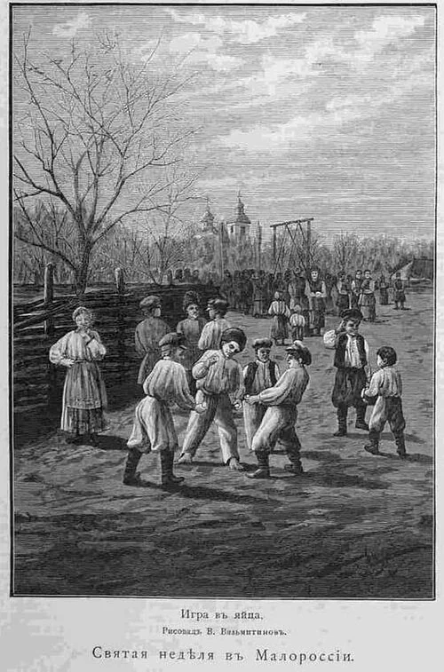

아직 펼치지 않은 카드
깨지는 껍데기, 부푸는 빵 · 1빨간 달걀과 달걀 부딪치기정교회 부활절에는 빨갛게 물들인 달걀을 서로 톡 부딪쳐요. 끝까지 안 깨진 달걀 주인은 어떻게 될까요?달걀끼리 톡! 끝까지 안 깨지면 이긴대!
성목요일 · 부활의 밤그리스와 정교회 세계
빨간 달걀과 달걀 부딪치기
그리스 정교회에서는 부활절을 사흘 앞둔 목요일에 달걀을 빨갛게 물들여요. 맨 처음 물든 달걀은 ‘성모의 달걀’이 되어 한 해 동안 이콘 앞을 지켜요. 물들이는 차례대로 놓아 보고, 부활의 인사와 함께 ‘톡’ 해 보세요.
부활절 사흘 전, 그리스 사람들은 달걀을 빨갛게 물들인대. 맨 처음 물든 달걀은 깨뜨리지 않고 일 년 동안 간직해! 같이 물들여 볼까?
검수 전 시안이에요(기준서 1판). 장면에는 기록에 있는 것만 옮겼고, 마리아 막달레나의 달걀 이야기는 전해지는 이야기라고 밝혔어요. 상상은 ‘눈 감고 상상해 보기’에만 썼어요. 물들이는 부엌 무대 그림은 이 안내서가 그렸어요.
시안 확인용카드 단계 미리 보기
1
사순절 동안 모은 달걀
정교회의 사순절은 부활절 전날까지 이어지는 긴 금식이에요. 이 동안 고기는 물론 달걀과 우유, 치즈도 먹지 않아요.
닭은 그동안에도 알을 낳아요. 그리스의 민속 기록은 그 달걀을 사순절 내내 모아 두었다고 전해요.

부활절을 사흘 앞둔 성목요일, 집집마다 부활절 빵을 반죽하고 달걀을 빨갛게 물들여요. 그래서 그리스에서는 이날을 ‘빨간 목요일’이라고도 불러요.
빵 한가운데에 빨간 달걀을 박아 굽기도 해요. 그리스 민속 달력은 이것을 비잔티움 시대부터 이어진 풍습이라고 적어요.
사순절에는 달걀을 안 먹고 모아 둬. 성목요일이 되면 한꺼번에 빨갛게 물들여!
물어보기빵 위에 빨간 달걀을 올리면 무엇처럼 보일까?
2
빨간 목요일 아침
성목요일 아침, 부엌에서 달걀 물들이기가 시작돼요. 그리스 민속 달력에 따르면 상을 당한 집 말고는 모든 집이 빨간 달걀을 물들였어요.
아래 부엌에 하나씩 놓아 보세요. 마지막에는 맨 처음 물든 달걀을 이콘 앞으로 옮겨요. 이콘은 예수와 성인들을 그린 정교회의 성화예요.
빨간 달걀을 다 물들였어요.
무대 그림: 이 안내서가 그린 성목요일 부엌과 집 안 이콘 선반 · 물들이는 차례는 그리스 부활절 달걀 안내와 in.gr을 바탕으로
맨 처음 물든 달걀을 그리스에서는 ‘성모의 달걀’이라고 불러요. 신기한 힘이 있다고 여겨, 여인들은 이 달걀로 아픈 아이에게 성호를 그어 주기도 했어요.
성모의 달걀은 깨뜨리지 않아요. 집 안 이콘 선반에 모셔 두고, 다음 부활절까지 그 자리에 둬요.
빨간 물, 식초, 달걀, 기름! 그리고 맨 처음 물든 달걀은 그림 앞에 살짝.
물어보기일 년 동안 깨뜨리지 않고 둔 달걀은 어떻게 될까?
3
황제 앞의 빨간 달걀
왜 하필 빨간 달걀일까요? 정교회에는 마리아 막달레나의 이야기가 전해져요. 막달레나는 부활하신 예수를 처음 만난 사람으로 복음서에 나와요.
14세기 비잔티움의 교회 역사가 니케포로스 크산토풀로스는 막달레나가 로마에 가서 티베리우스 황제 앞에서 전도했다고 적었어요. 러시아 정교회의 성인전은 그 장면을 이렇게 전해요.
“이탈리아에 갔을 때, 막달레나는 그때 다스리던 티베리우스 황제 앞에 나설 기회를 얻었어요. 그리고 널리 퍼진 동방의 풍습대로 빨갛게 물들인 달걀을 바치며 말했어요. ‘그리스도께서 부활하셨습니다!’”
러시아 정교회 성인전(로스토프의 디미트리 『성인전』 러시아어판), 마리아 막달레나 편 · 러시아어를 이 안내서가 우리말로 옮김
이 성인전은 그 뒤 그리스도인들이 막달레나를 따라, 부활을 기억하며 빨간 달걀을 주고받게 되었다고 전해요.
그리스에서는 조금 다르게 전해져요. 황제가 “달걀이 빨개지면 믿겠다”고 하자 달걀이 빨갛게 변했다는 이야기예요. 둘 다 성경에는 없는, 전해지는 이야기예요.
옛날이야기야. 마리아 막달레나가 황제에게 빨간 달걀을 건네며 “그리스도께서 부활하셨어요!” 했대.
물어보기기쁜 소식을 전할 때, 너는 무엇을 함께 건네고 싶어?
4
톡, 그리스도 부활하셨네
토요일 밤 자정을 넘겨 부활 예배가 끝나면, 가족이 모여 늦은 밤 식사를 해요. 그 식탁에서 빨간 달걀 부딪치기 ‘추그리스마’(τσούγκρισμα)가 시작돼요. ‘맞부딪치기’라는 뜻이에요.
한 사람이 “그리스도 부활하셨네!”(Χριστός Ανέστη) 하며 달걀 끝으로 상대 달걀을 톡 치면, 상대는 “참으로 부활하셨네!”(Αληθώς Ανέστη) 하고 받아요.


끝까지 깨지지 않은 달걀의 주인은 한 해 운이 좋다고들 해요. 그리스 사람들은 단단한 껍데기를 봉인된 무덤으로, 깨지는 껍데기를 열린 무덤으로 읽어요.
부활의 인사와 함께, 누구와 먼저 ‘톡’ 할까요?
“그리스도 부활하셨네!” 톡! “참으로 부활하셨네!” 톡!
물어보기톡 하고 껍데기가 깨지면, 무엇이 열린 걸까?
눈 감고 상상해 보기
자정이 지난 식탁 위로 촛불이 흔들려요. 손바닥에 쥔 빨간 달걀이 매끈하고 단단해요. 맞은편 사람과 눈이 마주치고, 함께 숨을 고르는 순간 — 톡. 가는 금 사이로 하얀 속이 보이고, 웃음이 터져요.
눈을 감아 봐. 빨간 달걀을 꼭 쥐었어. 하나, 둘, 셋 — 톡! 깨진 껍데기 사이로 하얀 속이 보여. 다 같이 웃어!
나의 자리
맨 처음 물든 달걀은 다음 부활절까지 깨지지 않은 채 이콘 앞에 놓여요. 그때까지 나는 무엇을 깨지지 않게 지키고 싶나요?
첫 달걀은 다음 부활절까지 깨지 않고 둔대. 너라면 그 달걀을 집 어디에 둘래?
마음에 닿는 한 줄을 고르거나 직접 써 보세요. 한 줄을 남기면 이 자리의 도장이 찍혀요. 이 기기에만 저장돼요.
더 깊이
궁금한 칸만 펼쳐 읽어도 괜찮아요.
알고 보면
빨간 목요일 그리스에서는 성목요일을 ‘빨간 목요일’(Κόκκινη Πέμπτη)이라고도 불러요. 이날 달걀을 빨갛게 물들이기 때문이에요. 빨강은 그리스도의 피를 떠올리게 한다고 여겨요.
식구 수만큼, 그리고 하나 더 옛날 흑해 바닷가 시노프(오늘의 튀르키예)에 살던 그리스 사람들은 식구 수만큼 달걀을 물들이고, 성모의 몫으로 하나를 더했어요. 성목요일 밤에 교회로 가져가 부활 때까지 제단 아래 두었다고 해요.
자정에 물들인 첫 달걀 그리스 서마케도니아에서는 성수요일 자정에 첫 달걀을 물들였어요. 그 달걀은 밭의 첫 고랑에 묻었어요. 씨앗이 달걀의 생명력으로 싹트기를 바란 거예요.
빨간 천 흑해 바닷가 메심브리아(오늘의 불가리아 네세바르)의 그리스 사람들은 성목요일에 달걀과 함께 천도 빨갛게 물들여, 40일 동안 창밖에 걸었어요.
기록마다 다른 점
막달레나의 달걀 러시아 성인전은 막달레나가 빨갛게 물들인 달걀을 가져갔다고 적어요. 그리스에서는 황제의 말에 달걀이 빨개졌다는 이야기로, 또는 막달레나의 바구니 속 흰 달걀이 빨개졌다는 이야기로 전해져요.
막달레나가 로마에? 막달레나가 로마에 가서 티베리우스 황제 앞에서 전도했다는 이야기는 14세기 크산토풀로스의 『교회사』에 나와요. 성경에는 없는 이야기예요.
어느 쪽부터 칠까 그리스 음식 안내 누리집은 뾰족한 끝으로 먼저 치고, 깨지면 달걀을 돌려 둥근 쪽을 내민다고 적어요. 집집마다 규칙이 조금씩 달라요.
언제 물들일까 대부분 성목요일에 물들이지만, 서마케도니아처럼 성수요일 자정에 시작하는 곳도 있어요. 물들이는 달걀 수와 방법도 고장마다 달라요.
세계의 달걀 부딪치기


1888년 러시아 잡지 『세계 화보』에는 ‘달걀 놀이’라는 판화가 실렸어요. 그림 아래에는 ‘소러시아의 부활 주간’이라고 적혀 있어요. 소러시아는 그때 러시아 제국이 우크라이나 땅을 부르던 말이에요. 오스트리아에도 비슷한 놀이 ‘에어페켄’(Eierpecken)이 있어요.
오른쪽 사진은 2015년 4월 5일 부활절에 한국에서 찍은 달걀이에요. 그림과 성경 구절을 입힌 삶은 달걀을 비닐봉지에 담았어요.
함께 읽는 말씀
말씀은 뜻만 옮기고, 본문은 대한성서공회 개역개정으로 이어 드려요.
마태복음 27장 66절 사람들은 예수의 무덤을 막은 돌을 봉인하고 경비병을 세워 지켰어요.
마가복음 16장 1~6절 안식일이 지난 이른 아침, 여인들이 무덤에 가 보니 큰 돌이 이미 굴려져 있었어요.
요한복음 20장 1~18절 마리아 막달레나가 빈 무덤 곁에서 부활하신 예수를 처음 만나고, 제자들에게 알려요.
물들이는 차례대로 금박
빨간 물 → 식초 → 달걀 → 올리브기름 → 첫 달걀 차례대로 다 놓으면 카드에 금박이 입혀져요.
빨간 물 → 식초 → 달걀 → 올리브기름 → 첫 달걀 차례로 놓기
부활의 인사 채색
둘 가운데 하나만 해도 카드가 채색돼요.
부활의 인사와 함께 누구와 먼저 ‘톡’ 할지 고르기
아이와 함께 ‘영화처럼 보기’를 끝까지 보기
근거 보기 (12)
- 미국 정교회(OCA): 금식 기간 — 사순절과 성주간에는 고기·달걀·유제품을 먹지 않음
- 아이카테리니 차코투-카르벨리, 『민속 달력』 발췌(pemptousia, 그리스어) — 상중인 집 말고 모든 집이 물들임, 사순절 내내 모음, 성모의 달걀·성호, 부활절 빵의 빨간 달걀(비잔티움 때부터)
- 정교회 통신(2020, 그리스어): 성목요일 풍습 — 성모의 달걀, 시노프·서마케도니아·메심브리아 풍습, 고장마다 다른 방법
- in.gr(2024, 그리스어): 첫 달걀은 성모의 것, 깨뜨리지 않고 다음 부활절까지 이콘 선반에, 껍데기와 무덤
- CNN 그리스(2026.4.9, 그리스어): 성목요일을 ‘빨간 목요일’이라 부르는 까닭, 첫 빨간 달걀을 이콘 선반에
- 그리스 헤럴드(2024): 빨간 달걀의 뜻, 자정 예배 뒤 가족 식사와 ‘추그리스마’, 인사말, 식초와 기름
- 그리스 음식 안내(2026): 식초가 물감을 붙임, 마른 뒤 올리브기름, 양파 껍질 물들이기, 끝을 맞대고 깨지면 둥근 쪽
- 토 비마(2025): 황제의 말에 바구니의 달걀이 빨개졌다는 그리스의 막달레나 이야기
- 러시아 정교회 성인전(로스토프의 디미트리 『성인전』 러시아어판, azbyka): 마리아 막달레나와 티베리우스 황제, 빨간 달걀
- 오소크리스천(2026): 크산토풀로스(†1335)의 『교회사』와 디미트리 로스토프스키(†1709)의 막달레나 이야기
- 위키미디어 공용: ‘달걀 놀이’ 판화 설명(『세계 화보』 17호, 1888)
- 대한성서공회 개역개정: 마태복음 27장 · 마가복음 16장 · 요한복음 20장
그림·사진·소리 출처
‘처음 만나는 기독교 문화’의 깊은 카드예요. 실제 인물의 얼굴이 나오는 사진은 쓰지 않았어요. 카드 단계와 남긴 글은 이 기기에만 저장돼요.